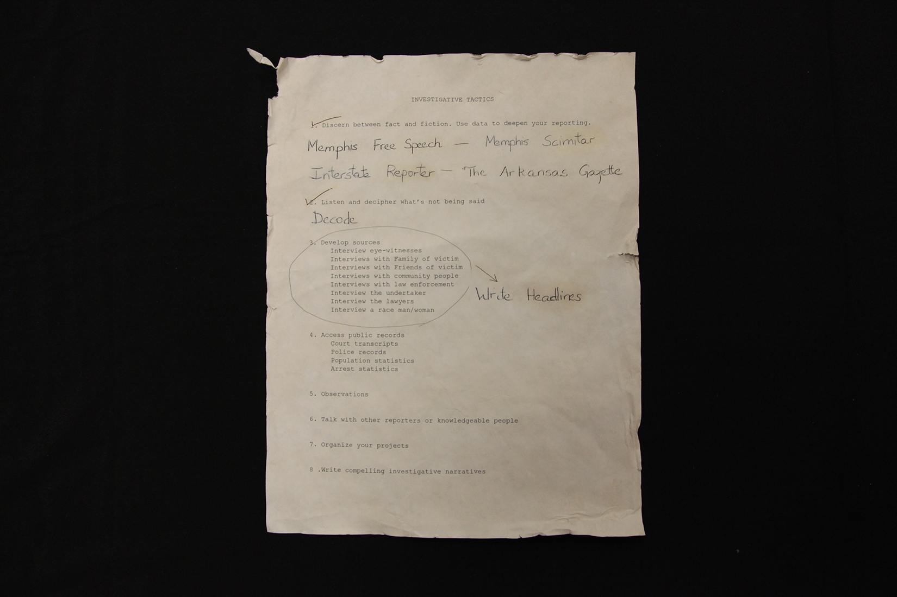

Playthrough (Rough Cut)
This is an accelerated playthrough. If you want to follow the narrative, pause the video when I zoom into artifacts and notes. Scroll down for additional materials and photos of the close-ups from the video.
Tracking Ida Explanation Video
Here's a rough cut video explaining the game, it's historical inspiration and goals, and the impact it had on the students who played the pilot.
Additional Materials and Close-Ups
Here are some additional materials that didn't make it into the video, plus the close-ups that were briefly shown.
Part 1: Puzzle Solving
Compartment 1
Intro note from Ida B. Wells

Main Headlines Puzzle (board)

Extension Headlines Puzzle (board)

Extension Headlines Puzzle (solved)

Compartment 2
Lynching Postcards

Phonograph Note from Library

Compartment 3
Ida's Investigative Tactics
Part 2: Newsteam Roleplay
After part 1, players talk with Jordan through email and chat to prepare for their next mission. Below are some samples of that communication.
Email from Jordan Moss

PR/Social Media Role

Part 3: Finale
Thomas Moss' Handkerchief

Ida with Moss Family


{kind=link}
{kind=link}
{kind=link}
{kind=link}
{kind=link}
{kind=link}